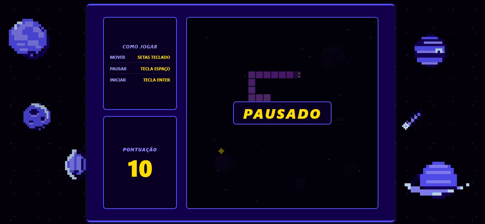

Meus Projetos
Repositórios e Experimentos

Lista de Tarefas
Aplicação para gerenciamento de tarefas diárias com marcação de conclusão.

Hora e Clima
Aplicação unificada que fornece dados meteorológicos em tempo real integrados com um relógio digital.

Jogo da Cobrinha em Python
O clássico Jogo da Cobrinha recriado utilizando Python e sua biblioteca Brython.

Automação Python
Scripts para manipulação de arquivos e automação de rotinas.

Calculadora Web
Uma calculadora funcional com interface moderna e operações básicas.

Dashboard do Sistema Solar
Dashboard informativo com algumas curiosidades e fatos sobre o Sistema Solar.

Portfólio Pessoal
Meu portfólio pessoal com minhas informações de contado e projetos. Ele é responsivo e com animações em Canvas.